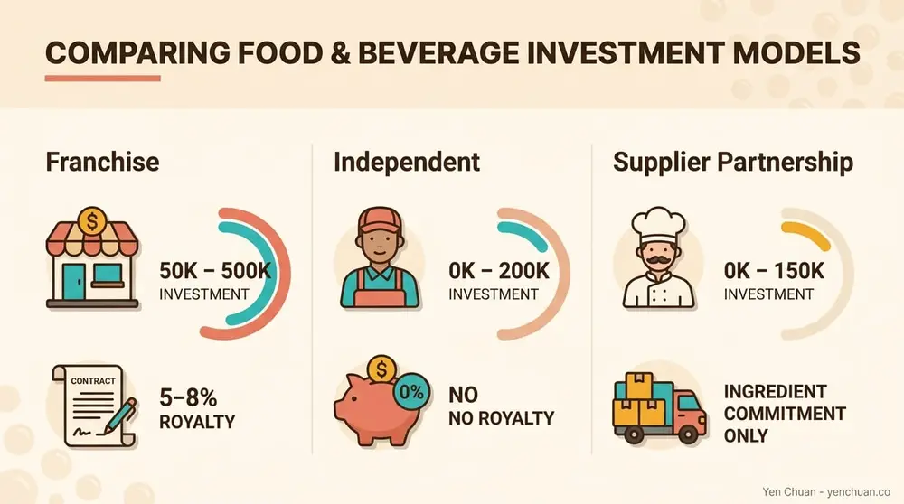
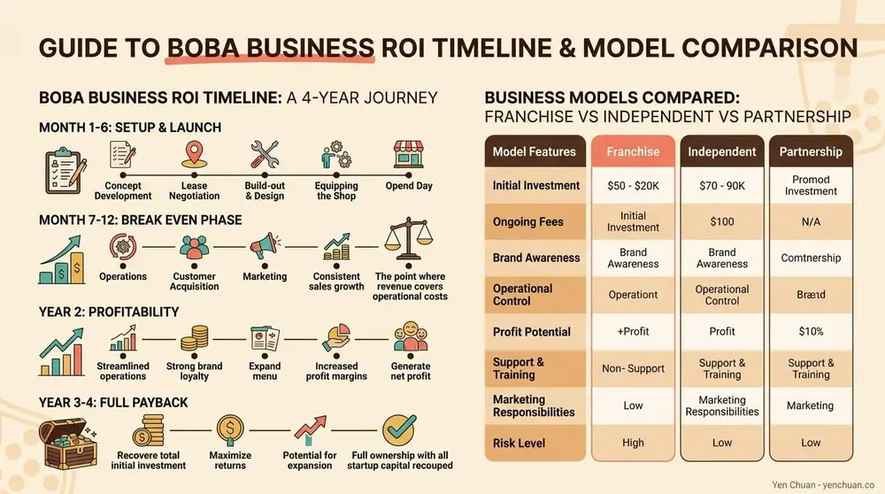

Articles / Business & sourcing
Taiwan Bubble Tea Franchise Investment & ROI Guide
2026-03-27 · Business, Industry Trends

Original public content from Yen Chuan. Product claims and specifications remain subject to confirmation by the company.
The global bubble tea market is projected to surpass $4.3 billion by 2027, with a compound annual growth rate of 8.9% through 2034. Taiwan's bubble tea brands dominate this expansion, attracting investors worldwide. If you're considering launching a bubble tea business, you face a critical decision: franchise with an established brand, operate independently, or partner with a supplier like Yen Chuan.
This guide breaks down investment models, real ROI data, and legal considerations to help you choose the right path.
Three Business Models: Franchise, Independent, and Supplier Partnership

Franchise Model
Franchising means buying the right to operate under an established brand. You gain trademark recognition, operational systems, and supply chain support. In return, you pay an upfront franchise fee and ongoing royalties (typically 5–8% of gross sales), plus 1–3% for marketing.
Investment range: $177,000–$507,000 depending on location and brand prestige.
Advantages: Proven business model, brand recognition, centralized support, streamlined operations, faster customer acquisition.
Disadvantages: Reduced profit margins due to royalties, restricted menu customization, ongoing brand compliance requirements, territory limitations.
Major Taiwan franchises include Gong Cha, CoCo Fresh Tea & Juice, Tiger Sugar, The Alley, and Sharetea. Each operates slightly different investment structures and support levels.
Independent Model
You build your own brand from scratch. You source ingredients, design your menu, manage all operations, and set your own pricing. Complete autonomy comes with complete responsibility.
Investment range: $80,000–$250,000 (highly variable based on location and operational efficiency).
Advantages: Full profit retention, complete creative control, flexible menu innovation, no royalty obligations, no brand restrictions.
Disadvantages: No brand recognition upon launch, longer customer acquisition period, you handle all operational complexity, higher marketing costs to build awareness, supply chain coordination falls on you.
Success in this model depends heavily on location selection, product quality, and effective local marketing.
Supplier Partnership Model
This hybrid approach lets you operate your own shop while partnering with a specialized supplier for ingredients, equipment, training, and recipes. You retain ownership and profit control while gaining access to proven formulations and expert support.
Yen Chuan offers this model through our complete one-stop solution for new shop owners. You get premium tea leaves, boba, syrups, equipment consultation, operational guidance, and customization support without the franchise fee or ongoing royalties. You build your own brand while operating efficiently from day one.
Investment range: $90,000–$200,000 (flexible based on shop size and equipment choices).
Advantages: No franchise fee or royalties, full brand autonomy, direct supplier relationship, access to proven recipes, professional training, scalability without corporate restrictions.
Disadvantages: You handle all regulatory compliance, marketing carries more weight, you manage staff directly, operational decisions rest entirely with you.
Investment Breakdown by Business Model
Understanding typical costs helps you budget realistically. These figures reflect current market rates in 2025–2026.
Franchise Model (Gong Cha example): - Franchise fee: $41,500 - Build-out and equipment: $100,000–$150,000 - Initial inventory: $15,000–$25,000 - Working capital: $20,000–$30,000 - Total: $177,000–$247,000
Franchise Model (Chatime example): - Franchise fee: $78,000 - Build-out and equipment: $80,000–$150,000 - Initial inventory: $15,000–$25,000 - Working capital: $18,000–$28,000 - Total: $191,000–$281,000
Franchise Model (Premium brands like The Alley): - Franchise fee: $50,000–$75,000 - Build-out (upscale storefronts): $150,000–$250,000 - Equipment and POS systems: $30,000–$50,000 - Initial inventory: $20,000–$30,000 - Working capital: $30,000–$50,000 - Total: $280,000–$455,000
Independent Model: - Permits and licensing: $2,000–$5,000 - Lease deposit and buildout: $30,000–$80,000 - Equipment (grinder, shakers, coolers, POS): $25,000–$60,000 - Initial inventory from multiple suppliers: $12,000–$20,000 - Signage and branding: $5,000–$10,000 - Working capital: $10,000–$20,000 - Total: $84,000–$195,000
Supplier Partnership Model (Yen Chuan-style): - Permits and licensing: $2,000–$5,000 - Lease deposit and buildout: $30,000–$75,000 - Equipment package (with supplier guidance): $20,000–$40,000 - Initial inventory from partner: $15,000–$25,000 - Signage and branding: $5,000–$10,000 - Training and consultation: Included or minimal additional cost - Working capital: $12,000–$20,000 - Total: $84,000–$175,000
ROI Timelines and Profitability Metrics

Real-world bubble tea shop performance depends on location, operations, and staffing. Industry benchmarks show:
Average annual revenue per shop: $300,000–$600,000 (single location, 5–7 transactions per hour during peak).
Cost of goods sold (COGS): 20–30% of revenue (tea leaves, boba, fruit, milk, syrups, cups, lids).
Operating costs: 40–50% of revenue (rent, utilities, labor, insurance).
Net profit margin: 15–25% before taxes (elite operators achieve 25%+, struggling shops drop to 10%).
Franchise Model ROI Timeline
Year 1: Breakeven to modest profit (10–15% margin after royalties and marketing contributions). Royalties alone (5–8% of sales) compress margins significantly.
Year 2–3: Stabilized operations typically reach 18–22% net margin. Payback period averages 3–4 years for well-placed franchises.
Year 5+: Mature franchises generate consistent 20–25% net profit annually. Total 5-year profit: $100,000–$200,000+ depending on sales volume.
ROI calculation example (Gong Cha at $400,000 annual revenue): - Gross revenue: $400,000 - COGS (25%): -$100,000 - Operating costs (45%): -$180,000 - Franchisee royalty (6%): -$24,000 - Marketing fund (2%): -$8,000 - Net profit: $88,000 annually (22% margin) - Payback period: 2.5 years
Independent Model ROI Timeline
Year 1: Slower customer acquisition. Margins reach 12–18% as you invest heavily in local marketing and brand building. Payback period typically 3.5–5 years due to marketing costs.
Year 2–3: Brand awareness grows. Margins improve to 20–25%. Word-of-mouth reduces marketing spend.
Year 5+: Established independents achieve 22–28% net profit annually, often exceeding franchise margins due to no royalty obligation. Total 5-year profit: $120,000–$250,000+ depending on execution.
ROI calculation example (Independent shop at $350,000 annual revenue): - Gross revenue: $350,000 - COGS (25%): -$87,500 - Operating costs (45%): -$157,500 - No royalties or franchise fees - Net profit: $105,000 annually (30% margin) - Payback period: 2.5–3 years (similar timing but higher profit after payback)
Supplier Partnership Model ROI Timeline
Year 1: Similar to independent model but with accelerated operational efficiency via supplier expertise. Margins reach 18–22% as you skip the royalty burden and gain immediate access to proven recipes and operational best practices.
Year 2–3: Margins expand to 22–26% as training payoff compounds. No royalty ceiling means profit growth scales fully with sales.
Year 5+: Mature supplier partnerships generate 24–30% net profit annually. Total 5-year profit: $130,000–$270,000+.
ROI calculation example (Yen Chuan partnership at $380,000 annual revenue): - Gross revenue: $380,000 - COGS (24%): -$91,200 - Operating costs (44%): -$167,200 - No franchise royalties - Net profit: $121,600 annually (32% margin) - Payback period: 2–2.5 years
The supplier partnership model balances startup efficiency with long-term profit potential. You access expert guidance without paying perpetual royalties, and you control your brand direction entirely.
Major Taiwan Franchise Brands: Costs, Expansion Strategy, and ROI
Gong Cha
Founded: 2006 (Kaohsiung, Taiwan).
Global footprint: 2,000+ locations across 20+ countries.
Investment range: $177,430–$335,400.
Franchise fee: $41,500.
Royalty: 5.5% of gross sales.
Expansion strategy: Gong Cha employs a strategic site-selection methodology: founder deliberately opens shops adjacent to Starbucks locations worldwide, leveraging Starbucks' sophisticated real estate data to identify high-traffic, affluent neighborhoods. This approach has driven rapid global expansion and high unit economics.
Store footprint: 500–1,000 square feet, keeping real estate costs manageable even in premium locations.
Typical ROI: 3–4 years for well-placed franchises; 22–25% net margin after stabilization.
CoCo Fresh Tea & Juice
Founded: 2005 (Taiwan).
Global footprint: 300+ locations in multiple countries; 20 locations in New York, New Jersey, and Massachusetts as of 2025.
Investment range: Estimated $200,000–$400,000 depending on location.
Expansion strategy: CoCo partners with established refreshment companies and franchise networks to expand into uncharted markets. Recent planned partnerships target India and Pakistan, leveraging local franchisee expertise.
Supply chain: Sources whole tea leaves and seasonal fruits from local and international suppliers to maintain freshness and flavor consistency.
Typical ROI: 3–4 years; 20–24% net margin post-stabilization.
Tiger Sugar
Founded: 2009 (Taiwan).
Global footprint: 250+ locations across Asia, North America, and beyond.
Investment range: Estimated $180,000–$380,000 depending on market.
Brand support: Provides franchisees with standardized operating procedures, innovative store concepts, and comprehensive operational training.
Expansion pattern: Strong presence across Asia with growing North American market share.
Typical ROI: 3–4 years; 20–23% net margin when stabilized.
The Alley
Founded: 2017 (Taiwan, premium positioning).
Global footprint: 200+ locations, focused on premium urban markets.
Investment range: $280,000–$455,000 (higher due to upscale store design and positioning).
Franchise fee: $50,000–$75,000.
Royalty: 6–7% of gross sales.
Brand positioning: Premium bubble tea with artisanal ingredients and sophisticated store aesthetics. Targets high-income urban areas.
Typical ROI: 3–4.5 years; 18–22% net margin (slightly lower than casual brands due to higher occupancy costs for premium locations).
Sharetea
Founded: 2011 (Taiwan).
Global footprint: 500+ locations worldwide.
Investment range: $300,000+ (minimum $100,000 liquid capital required).
Franchise fee: Varies by region; typically $40,000–$60,000.
Royalty: 5–6% of gross sales.
Expansion approach: Requires substantial liquid capital, indicating focus on financially stable franchisees who can weather market variations.
Typical ROI: 3.5–4.5 years; 19–23% net margin.
How Yen Chuan's "Open a New Shop" Model Works
Rather than franchising, Yen Chuan offers a direct partnership approach tailored to entrepreneurs who want autonomy without the franchise fee overhead.
What's included: - Premium Taiwan-origin tea leaves and specialty ingredients - Boba, fruit purees, syrups, and proprietary drink formulations - Equipment recommendations and sourcing guidance - Complete operational training (staff training, preparation techniques, efficiency protocols) - Customization support for menu adaptation to local tastes - Ongoing supply chain relationship with priority access to new seasonal offerings
What you control: - Store branding and identity - Pricing strategy - Menu variations and local adaptation - Staff hiring and training (with our guidelines) - Marketing approach and channel selection - Long-term business strategy and expansion plans
No royalty structure. You pay wholesale cost for ingredients plus a reasonable markup. Yen Chuan earns volume through your success, aligning our interests. Contact us to discuss how this model fits your business goals.
Legal Considerations: FDD, Territory Rights, and Compliance
Before signing any franchise agreement, understand the legal framework protecting (and restricting) your business.
Franchise Disclosure Document (FDD)
The FDD is a comprehensive legal document franchisors must provide in the United States (and many other jurisdictions) before you sign or pay money. It includes:
- 23 mandatory disclosure items covering franchisor history, fees, litigation history, bankruptcy history, and financial performance representations.
- Detailed financial statements of the franchisor.
- List of all franchisees and their contact information (allowing you to conduct reference checks).
- Estimated startup costs broken down by category.
- A sample franchise agreement and all related contracts.
Action step: Read the FDD thoroughly. Conduct reference calls with 10–15 existing franchisees—ask specifically about profitability, support quality, and whether they would franchise again if they could restart.
Territory Rights and Non-Compete Clauses
Most franchise agreements grant exclusive territory rights (a defined geographic area where you're the sole franchisee) in exchange for volume commitments. Common structures:
- Exclusive territory: You're the only franchisee in a defined radius (typically 0.5–2 miles or specific ZIP codes). The franchisor cannot open another location competing with you.
- Protected territory: Similar to exclusive, but the franchisor may open company-owned locations.
- Non-exclusive: You compete with other franchisees of the same brand in your area.
Check whether the agreement allows you to expand to adjacent territories or open multiple units. Some franchisors restrict multi-unit growth to slow-growing operators.
Non-compete clause: Most agreements prohibit you from opening a competing bubble tea shop (or sometimes any beverage shop) within a defined radius for 1–2 years after franchise termination. This protects the franchisor's investment but restricts your future options.
Other Legal Protections and Obligations
- Insurance requirements: Most franchisors require general liability ($1–2 million), workers compensation, and property insurance.
- Food safety compliance: You must comply with local health codes, FDA regulations, and allergen labeling requirements. Bubble tea shops handle food and beverages; non-compliance risks fines or closure.
- Employment law: Ensure compliance with minimum wage, overtime, workplace safety, and anti-discrimination laws. Franchisor training should address these, but final responsibility rests with you.
- Trademark usage: Franchisees must use trademarks exactly as directed. Unauthorized variations can trigger remediation demands or termination.
- Lease coordination: Most franchisors approve your lease location and terms to ensure alignment with brand standards and ROI expectations.
Recommendation: Consult a franchise attorney in your jurisdiction before signing. Costs run $1,500–$3,000 for a thorough review but often identify unfavorable terms worth renegotiating.
Real-World ROI Examples
Example 1: Gong Cha Franchisee in Austin, Texas
Investment: $250,000 total ($41,500 franchise fee, $150,000 buildout, $30,000 equipment, $28,500 working capital).
Location: High-traffic strip mall near university campus, 700 sq ft.
Year 1 performance: - Monthly average transactions: 2,000 - Average transaction value: $6.50 - Annual revenue: $156,000 (lower due to ramp-up period) - COGS (26%): -$40,560 - Operating costs (50%): -$78,000 - Franchisee royalty (5.5%): -$8,580 - Marketing fund (2%): -$3,120 - Net loss: -$3,740 (breakeven achieved by month 11)
Year 2–3 stabilization: - Monthly transactions: 3,500 (growth via word-of-mouth and campus awareness) - Annual revenue: $273,000 - COGS (25%): -$68,250 - Operating costs (45%): -$122,850 - Royalty (5.5%): -$15,015 - Marketing (2%): -$5,460 - Net profit: $61,425 annually (22.5% margin)
5-year total profit: ~$300,000 cumulative. Payback achieved in year 2.5.
Example 2: Independent Bubble Tea Shop in Portland, Oregon
Investment: $160,000 total ($35,000 lease/buildout, $35,000 equipment, $18,000 initial inventory, $12,000 signage, $20,000 working capital, $10,000 marketing prep).
Location: Indie-friendly neighborhood, 600 sq ft, owned by local operator passionate about tea quality.
Year 1 performance: - Monthly transactions: 1,500 (slower than franchise due to brand-building phase) - Average transaction value: $6.80 - Annual revenue: $122,400 - COGS (24%): -$29,376 - Operating costs (48%): -$58,752 - Marketing spend (significant, organic growth phase): -$10,000 - Net profit: $24,272 (19.8% margin)
Year 2–3 growth: - Monthly transactions: 2,800 (strong word-of-mouth, local press, social media) - Annual revenue: $228,480 - COGS (23%): -$52,550 - Operating costs (44%): -$100,531 - Marketing (organic-focused, minimal paid spend): -$2,000 - Net profit: $73,399 annually (32.1% margin)
5-year total profit: ~$320,000 cumulative. Higher margins than franchise post-stabilization, though slower initial growth.
Example 3: Yen Chuan Partnership Model in Toronto, Canada
Investment: $145,000 total ($35,000 lease/buildout, $25,000 equipment package [with Yen Chuan guidance], $20,000 initial ingredient order, $10,000 branding, $15,000 working capital, $5,000 training/consultation).
Location: Vibrant East Asian neighborhood, 550 sq ft, operator with strong local community connections.
Year 1 performance: - Monthly transactions: 2,200 (benefits from Yen Chuan's recipe/training + operator's local roots) - Average transaction value: $6.50 - Annual revenue: $171,600 - COGS (23%): -$39,468 - Operating costs (45%): -$77,220 - No franchise royalties - Net profit: $55,212 annually (32.1% margin)
Year 2–3 optimization: - Monthly transactions: 3,100 (growth via customized menu + Yen Chuan ingredient innovations) - Annual revenue: $241,800 - COGS (22%): -$53,196 - Operating costs (43%): -$103,974 - Net profit: $84,630 annually (35% margin)
5-year total profit: ~$380,000 cumulative. Higher initial margin than franchise, faster payback (2 years), no royalty ceiling limiting profit growth.
Choosing Your Path: Franchise vs. Independent vs. Partnership
Choose franchise if: - You value brand recognition and proven systems over creative autonomy. - You prefer structured support and standardized operations. - You're comfortable with ongoing royalties (5–8% of sales) in exchange for operational safety. - You want faster customer acquisition via existing brand loyalty. - You lack deep beverage industry experience and need hand-holding.
Choose independent if: - You have a unique menu concept or brand vision that doesn't fit existing franchises. - You're willing to invest heavily in local marketing to build awareness. - You want maximum profit retention without royalty obligations. - You have food/beverage operational experience or strong co-founder expertise. - You're comfortable with higher early-stage risk and longer payback periods.
Choose supplier partnership (Yen Chuan model) if: - You want brand autonomy without the franchise fee ($40,000–$75,000 savings). - You value access to proven recipes and expert guidance without perpetual royalties. - You want to build your own brand while operating efficiently from day one. - You're willing to take full operational responsibility but appreciate professional support. - You see long-term value in a partnership-based supplier relationship over transactional ingredients sourcing.
FAQ
Q: What's the typical payback period for a bubble tea franchise?
A: Most well-placed franchises achieve full payback (recovering initial investment) in 2.5–4 years, depending on location, sales volume, and operational efficiency. Shops in high-traffic areas (university campuses, malls, downtown cores) often reach breakeven faster than suburban locations. Operating margin of 20–25% annually after stabilization means a $250,000 investment yields $50,000–$62,500 profit annually once mature.
Q: Do I need beverage industry experience to succeed?
A: Not required, but helpful. Franchisors provide training in drink preparation, customer service, and operational procedures. Independent operators and supplier partnerships benefit from prior experience in retail, food service, or business management. Gong Cha, CoCo, and other major franchises successfully train operators with zero beverage experience; your willingness to execute systems matters more than prior expertise.
Q: What's the most common reason bubble tea shops fail?
A: Poor location selection and insufficient working capital to survive the ramp-up period. Shops in low-traffic areas struggle to build customer volume. Undercapitalization forces closure when unexpected expenses arise (equipment repair, lease disputes, staffing challenges) before the business reaches profitability. Commit to prime locations and maintain 3–6 months of operating expenses in reserve.
Q: Can I franchise multiple units?
A: Most franchisors allow multi-unit development agreements for operators demonstrating financial strength and operational competence. Gong Cha, Sharetea, and CoCo actively pursue multi-unit franchisees. Typical requirements: $500,000–$1 million net worth, $200,000–$500,000 liquid capital, and agreement to open 3–5 units within 3–5 years. This approach can achieve economies of scale and faster ROI across the portfolio.
Q: What ongoing costs should I budget beyond franchise royalties?
A: Plan for 45–50% of revenue in operating costs: rent (12–18%), labor (18–25%), utilities (2–3%), insurance (1–2%), maintenance (1–2%), and miscellaneous (2–3%). Ingredient costs (COGS) add another 20–30% of revenue. Factor in marketing ($1,000–$3,000 monthly for independent operators), professional services (accounting, legal), and equipment replacement cycles. Franchisees add 5–8% royalties plus 1–3% marketing fund obligations.
Conclusion
Taiwan's bubble tea brands have cracked a global code: small footprint, low occupancy cost, high per-transaction value, strong customer retention, and rapid franchise expansion. Whether you franchise with Gong Cha, go independent, or partner with a supplier like Yen Chuan, the fundamentals remain: location, operational execution, and consistent quality drive profitability.
Franchise models offer speed and support but compress margins. Independent models offer upside but demand marketing investment. Supplier partnerships balance autonomy with expert guidance while avoiding franchise fees.
Starting your own bubble tea business? Yen Chuan offers a complete one-stop solution — from ingredients and equipment to recipes and training. Contact us to get started.
Authority Sources
- Boba Tea Franchise Guide: Compare Top 10 Opportunities (2025)
- Gong Cha Franchise FDD, Profits & Costs (2025) – SharpSheets
- Top 10 Bubble Tea Franchises Dominating the Global Market – Polaris Market Research
- Bubble Tea Market to Worth USD 4.08 Billion by 2030 – Yahoo Finance
- Oolong Bubble Tea Market Size, Share, Trends | Growth [2034] – Fortune Business Insights
About the Author
Yen Chuan is a leading supplier of premium Taiwan-origin bubble tea ingredients and operational support for independent shop owners and franchise partners. We've sourced the finest tea leaves, boba, and syrups from Taiwan's tea country for over a decade. With deep expertise in franchise models, supplier relationships, and shop profitability, we help entrepreneurs navigate the path to opening successful bubble tea businesses. Our open a new shop program provides everything from ingredients to training—with zero franchise fees or ongoing royalties.